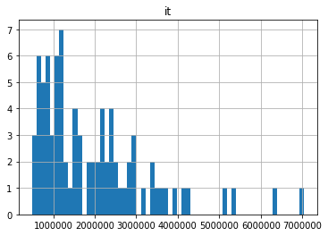
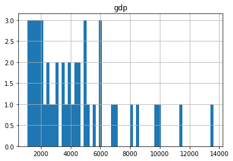
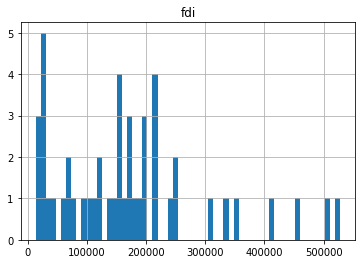
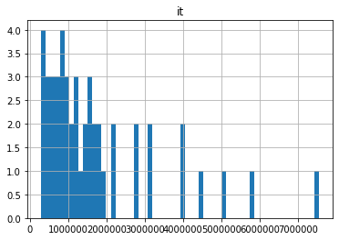
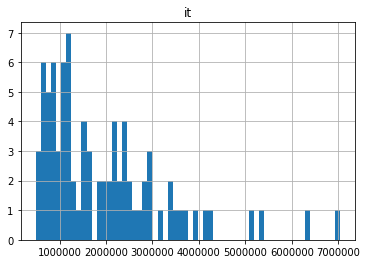
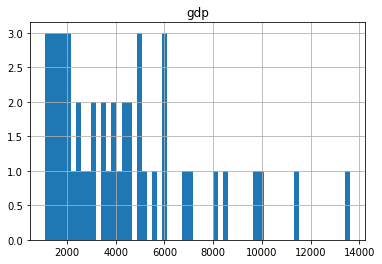
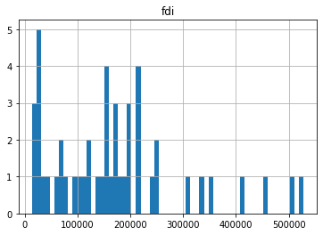
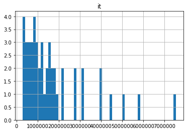

Evaluating Distributions and generating Experimental Crosstabs for the Evaluation of Experiments as well as Experimental Comparisons with T-Tests, Purpose Assumptions, Corrections and Implementations in Python¶
The purpose of the T-test is to compare if there are mean differences between two groups of interest. When we are interested in comparing statistical differences between more than two groups, and we conduct multiple t-tests, we will end up increasing the likelihood of a false positive (type I error) where we are incorrectly rejecting the null hypothesis that there are no statistical differences between groups. One way to address this is to use the Bonferroni correction. The Bonferroni correction, the namesake of Carlo Emilio Bonferroni, accounts for what we lose in a p-hacking quest in the experimentation, which is the justification for taking p-values at face value. By intuition, when we go searching for significant differences everywhere, the chance of seeing an apparent significant difference by chance anywhere increases. Using the Bonferroni correction, if the starting alpha/significance level is .05 and we are testing 10 hypotheses, then the corrected alpha/significance level we should use would be .005. Understanding the lack of an incentive to make such an adjustment is straightforward. Another way to address this is to first use ANOVA to detect statistical differences between all groups before deciding whether to use t tests to look for pairwise comparisons between groups.¶
T test comparisons uses the means, counts and standard deviations of a treatment and control in comparison to an idealized normal distribution to calculate a p value, which by intuition is the likelihood of seeing a mean difference of the same or more extreme magnitude between treatment and control as a result of chance. This is done through a comparison to an idealized normal distribution, through the calculation of a t-statistic. While the test statistic is assumed to follow an idealized normal distribution if the scaling term, but where the scaling term is unknown and it is instead estimated based on the data, which is assumed to follow the student’s t distribution.This process can be thought of trying to disentangle the signal (mean difference and counts) from the noise variability. Here the mean difference is the direction of the signal and the counts are the strength of the signal.¶
import numpy as np
import dask.array as da
import pandas as pd
import sqlalchemy as db
from sqlalchemy import create_engine
import sqlite3
import pandas as pd
import seaborn as sns
import numpy as np
import pandas as pd
from statsmodels.stats.power import NormalIndPower, TTestIndPower
from scipy.stats import ttest_ind_from_stats
import numpy as np
import scipy
/home/gao/anaconda3/lib/python3.7/site-packages/statsmodels/tools/_testing.py:19: FutureWarning: pandas.util.testing is deprecated. Use the functions in the public API at pandas.testing instead.
import pandas.util.testing as tm
df = pd.read_csv('df_panel_fix.csv')
df_subset = df[["year", "reg", "province", "gdp", "fdi", 'it',"specific"]]
df_subset.columns = ["year", "region", "province", "gdp", "fdi", 'it',"specific"]
df=df_subset
df
| year | region | province | gdp | fdi | it | specific | |
|---|---|---|---|---|---|---|---|
| 0 | 1996 | East China | Anhui | 2093.30 | 50661 | 631930 | 147002.0 |
| 1 | 1997 | East China | Anhui | 2347.32 | 43443 | 657860 | 151981.0 |
| 2 | 1998 | East China | Anhui | 2542.96 | 27673 | 889463 | 174930.0 |
| 3 | 1999 | East China | Anhui | 2712.34 | 26131 | 1227364 | 285324.0 |
| 4 | 2000 | East China | Anhui | 2902.09 | 31847 | 1499110 | 195580.0 |
| ... | ... | ... | ... | ... | ... | ... | ... |
| 355 | 2003 | East China | Zhejiang | 9705.02 | 498055 | 2261631 | 391292.0 |
| 356 | 2004 | East China | Zhejiang | 11648.70 | 668128 | 3162299 | 656175.0 |
| 357 | 2005 | East China | Zhejiang | 13417.68 | 772000 | 2370200 | 656175.0 |
| 358 | 2006 | East China | Zhejiang | 15718.47 | 888935 | 2553268 | 1017303.0 |
| 359 | 2007 | East China | Zhejiang | 18753.73 | 1036576 | 2939778 | 844647.0 |
360 rows × 7 columns
# Add distributions by region
import matplotlib.pyplot as plt
#fig, axes = plt.subplots(nrows=3, ncols=3)
test_cells = ['East China', 'North China']
metrics = ['gdp', 'fdi', 'it']
for test_cell in test_cells:
for metric in metrics:
df.loc[df["region"] == test_cell].hist(column=[metric], bins=60)
print(test_cell)
print(metric)
East China
gdp
East China
fdi
East China
it
North China
gdp
North China
fdi
North China
it
 







df.hist(column=['fdi'], bins=60)
array([[<matplotlib.axes._subplots.AxesSubplot object at 0x7fa7ec7cbdd8>]],
dtype=object)

Distributions of Dependant Variables¶
Right skew¶
df.hist(column=['fdi'], bins=60)
array([[<matplotlib.axes._subplots.AxesSubplot object at 0x7fa7ec6e00f0>]],
dtype=object)

sns.distplot(df['gdp'])
<matplotlib.axes._subplots.AxesSubplot at 0x7fa7ec5d6a90>

sns.distplot(df['fdi'])
<matplotlib.axes._subplots.AxesSubplot at 0x7fa7ec4a4d30>

sns.distplot(df['it'])
<matplotlib.axes._subplots.AxesSubplot at 0x7fa7ec4df278>

sns.distplot(df['specific'].dropna())
<matplotlib.axes._subplots.AxesSubplot at 0x7fa7ec3e09e8>
df.hist(column=['fdi'], bins=60)
array([[<matplotlib.axes._subplots.AxesSubplot object at 0x7fa7ec31ccc0>]],
dtype=object)

Removal of GDP value outliers more than 3 standard deviations away from the mean¶
outlier removal of rows with GDP values that are > 3 standard deviations away form the mean¶
import scipy.stats as stats
df['gdp_zscore'] = stats.zscore(df['gdp'])
these are the observations more then > 3 SDs away from the mean of gdp that will be dropped¶
df[abs(df['gdp_zscore'])>3].hist(column = ['gdp'])
array([[<matplotlib.axes._subplots.AxesSubplot object at 0x7fa7ec873208>]],
dtype=object)
df_no_gdp_outliers=df[abs(df['gdp_zscore'])<3]
df_no_gdp_outliers
| year | region | province | gdp | fdi | it | specific | gdp_zscore | |
|---|---|---|---|---|---|---|---|---|
| 0 | 1996 | East China | Anhui | 2093.30 | 50661 | 631930 | 147002.0 | -0.521466 |
| 1 | 1997 | East China | Anhui | 2347.32 | 43443 | 657860 | 151981.0 | -0.464746 |
| 2 | 1998 | East China | Anhui | 2542.96 | 27673 | 889463 | 174930.0 | -0.421061 |
| 3 | 1999 | East China | Anhui | 2712.34 | 26131 | 1227364 | 285324.0 | -0.383239 |
| 4 | 2000 | East China | Anhui | 2902.09 | 31847 | 1499110 | 195580.0 | -0.340870 |
| ... | ... | ... | ... | ... | ... | ... | ... | ... |
| 354 | 2002 | East China | Zhejiang | 8003.67 | 307610 | 1962633 | 365437.0 | 0.798274 |
| 355 | 2003 | East China | Zhejiang | 9705.02 | 498055 | 2261631 | 391292.0 | 1.178172 |
| 356 | 2004 | East China | Zhejiang | 11648.70 | 668128 | 3162299 | 656175.0 | 1.612181 |
| 357 | 2005 | East China | Zhejiang | 13417.68 | 772000 | 2370200 | 656175.0 | 2.007180 |
| 358 | 2006 | East China | Zhejiang | 15718.47 | 888935 | 2553268 | 1017303.0 | 2.520929 |
350 rows × 8 columns
df_no_gdp_outliers.hist(column=['gdp'], bins=60)
array([[<matplotlib.axes._subplots.AxesSubplot object at 0x7fa7ec95e4e0>]],
dtype=object)
counts_fiscal=df.groupby('region').count()
counts_fiscal
| year | province | gdp | fdi | it | specific | gdp_zscore | |
|---|---|---|---|---|---|---|---|
| region | |||||||
| East China | 84 | 84 | 84 | 84 | 84 | 84 | 84 |
| North China | 48 | 48 | 48 | 48 | 48 | 47 | 48 |
| Northeast China | 36 | 36 | 36 | 36 | 36 | 36 | 36 |
| Northwest China | 60 | 60 | 60 | 60 | 60 | 60 | 60 |
| South Central China | 72 | 72 | 72 | 72 | 72 | 72 | 72 |
| Southwest China | 60 | 60 | 60 | 60 | 60 | 57 | 60 |
counts_fiscal=df.groupby('province').count()
counts_fiscal
| year | region | gdp | fdi | it | specific | gdp_zscore | |
|---|---|---|---|---|---|---|---|
| province | |||||||
| Anhui | 12 | 12 | 12 | 12 | 12 | 12 | 12 |
| Beijing | 12 | 12 | 12 | 12 | 12 | 12 | 12 |
| Chongqing | 12 | 12 | 12 | 12 | 12 | 9 | 12 |
| Fujian | 12 | 12 | 12 | 12 | 12 | 12 | 12 |
| Gansu | 12 | 12 | 12 | 12 | 12 | 12 | 12 |
| Guangdong | 12 | 12 | 12 | 12 | 12 | 12 | 12 |
| Guangxi | 12 | 12 | 12 | 12 | 12 | 12 | 12 |
| Guizhou | 12 | 12 | 12 | 12 | 12 | 12 | 12 |
| Hainan | 12 | 12 | 12 | 12 | 12 | 12 | 12 |
| Hebei | 12 | 12 | 12 | 12 | 12 | 11 | 12 |
| Heilongjiang | 12 | 12 | 12 | 12 | 12 | 12 | 12 |
| Henan | 12 | 12 | 12 | 12 | 12 | 12 | 12 |
| Hubei | 12 | 12 | 12 | 12 | 12 | 12 | 12 |
| Hunan | 12 | 12 | 12 | 12 | 12 | 12 | 12 |
| Jiangsu | 12 | 12 | 12 | 12 | 12 | 12 | 12 |
| Jiangxi | 12 | 12 | 12 | 12 | 12 | 12 | 12 |
| Jilin | 12 | 12 | 12 | 12 | 12 | 12 | 12 |
| Liaoning | 12 | 12 | 12 | 12 | 12 | 12 | 12 |
| Ningxia | 12 | 12 | 12 | 12 | 12 | 12 | 12 |
| Qinghai | 12 | 12 | 12 | 12 | 12 | 12 | 12 |
| Shaanxi | 12 | 12 | 12 | 12 | 12 | 12 | 12 |
| Shandong | 12 | 12 | 12 | 12 | 12 | 12 | 12 |
| Shanghai | 12 | 12 | 12 | 12 | 12 | 12 | 12 |
| Shanxi | 12 | 12 | 12 | 12 | 12 | 12 | 12 |
| Sichuan | 12 | 12 | 12 | 12 | 12 | 12 | 12 |
| Tianjin | 12 | 12 | 12 | 12 | 12 | 12 | 12 |
| Tibet | 12 | 12 | 12 | 12 | 12 | 12 | 12 |
| Xinjiang | 12 | 12 | 12 | 12 | 12 | 12 | 12 |
| Yunnan | 12 | 12 | 12 | 12 | 12 | 12 | 12 |
| Zhejiang | 12 | 12 | 12 | 12 | 12 | 12 | 12 |
#df_no_gdp_outliers.pivot_table(index='grouping column 1', columns='grouping column 2', values='aggregating column', aggfunc='sum')
#pd.crosstab(df_no_gdp_outliers, 'year')
df_no_gdp_outliers_subset = df_no_gdp_outliers[['region', 'gdp', 'fdi', 'it']]
df_no_gdp_outliers_subset
| region | gdp | fdi | it | |
|---|---|---|---|---|
| 0 | East China | 2093.30 | 50661 | 631930 |
| 1 | East China | 2347.32 | 43443 | 657860 |
| 2 | East China | 2542.96 | 27673 | 889463 |
| 3 | East China | 2712.34 | 26131 | 1227364 |
| 4 | East China | 2902.09 | 31847 | 1499110 |
| ... | ... | ... | ... | ... |
| 354 | East China | 8003.67 | 307610 | 1962633 |
| 355 | East China | 9705.02 | 498055 | 2261631 |
| 356 | East China | 11648.70 | 668128 | 3162299 |
| 357 | East China | 13417.68 | 772000 | 2370200 |
| 358 | East China | 15718.47 | 888935 | 2553268 |
350 rows × 4 columns
def aggregate_and_ttest(dataset, groupby_feature='region', alpha=.05, test_cells = [0, 1]):
#Imports
from tqdm import tqdm
from scipy.stats import ttest_ind_from_stats
metrics = ['gdp', 'fdi', 'it']
feature_size = 'size'
feature_mean = 'mean'
feature_std = 'std'
for metric in tqdm(metrics):
#print(metric)
crosstab = dataset.groupby(groupby_feature, as_index=False)[metric].agg(['size', 'mean', 'std'])
print(crosstab)
treatment = crosstab.index[test_cells[0]]
control = crosstab.index[test_cells[1]]
counts_control = crosstab.loc[control, feature_size]
counts_treatment = crosstab.loc[treatment, feature_size]
mean_control = crosstab.loc[control, feature_mean]
mean_treatment = crosstab.loc[treatment, feature_mean]
standard_deviation_control = crosstab.loc[control, feature_std]
standard_deviation_treatment = crosstab.loc[treatment, feature_std]
t_statistic, p_value = ttest_ind_from_stats(mean1=mean_treatment, std1=standard_deviation_treatment, nobs1=counts_treatment,mean2=mean_control,std2=standard_deviation_control,nobs2=counts_control)
#fstring to print the p value and t statistic
print(f"The t statistic of the comparison of the treatment test cell of {treatment} compared to the control test cell of {control} is {t_statistic} and the p value is {p_value}.")
#f string to say of the comparison is significant at a given alpha level
if p_value < alpha:
print(f'The comparison between {treatment} and {control} is statistically significant at the threshold of {alpha}')
else:
print(f'The comparison between {treatment} and {control} is not statistically significant at the threshold of {alpha}')
aggregate_and_ttest(df_no_gdp_outliers_subset, test_cells = [0,1])
100%|██████████| 3/3 [00:00<00:00, 115.78it/s]
size mean std
region
East China 78 6070.604231 3500.372702
North China 48 4239.038542 2866.705149
Northeast China 36 3849.076944 1948.531835
Northwest China 60 1340.026167 1174.399739
South Central China 68 4835.540882 3697.129915
Southwest China 60 2410.398833 2144.589994
The t statistic of the comparison of the treatment test cell of East China compared to the control test cell of North China is 3.0488753833171947 and the p value is 0.002808541335921234.
The comparison between East China and North China is statistically significant at the threshold of 0.05
size mean std
region
East China 78 355577.897436 275635.866746
North China 48 169600.583333 127011.475909
Northeast China 36 136623.750000 142734.495232
Northwest China 60 15111.133333 22954.193559
South Central China 68 218931.426471 339981.399823
Southwest China 60 25405.083333 31171.373876
The t statistic of the comparison of the treatment test cell of East China compared to the control test cell of North China is 4.391461461316698 and the p value is 2.3859390186769955e-05.
The comparison between East China and North China is statistically significant at the threshold of 0.05
size mean std
region
East China 78 1.775615e+06 1.153030e+06
North China 48 1.733719e+06 1.548794e+06
Northeast China 36 2.665148e+06 1.768442e+06
Northwest China 60 1.703538e+06 1.446408e+06
South Central China 68 2.500962e+06 2.196436e+06
Southwest China 60 2.424971e+06 2.002198e+06
The t statistic of the comparison of the treatment test cell of East China compared to the control test cell of North China is 0.17339716493934587 and the p value is 0.862621991978372.
The comparison between East China and North China is not statistically significant at the threshold of 0.05
from tqdm import tqdm
for i in tqdm(range(10000)):
...
100%|██████████| 10000/10000 [00:00<00:00, 2169617.21it/s]
EastvNorth=pd.DataFrame()
EastvNorth= aggregate_and_ttest(df_no_gdp_outliers_subset, test_cells = [0,1])
EastvNorth
100%|██████████| 3/3 [00:00<00:00, 135.00it/s]
size mean std
region
East China 78 6070.604231 3500.372702
North China 48 4239.038542 2866.705149
Northeast China 36 3849.076944 1948.531835
Northwest China 60 1340.026167 1174.399739
South Central China 68 4835.540882 3697.129915
Southwest China 60 2410.398833 2144.589994
The t statistic of the comparison of the treatment test cell of East China compared to the control test cell of North China is 3.0488753833171947 and the p value is 0.002808541335921234.
The comparison between East China and North China is statistically significant at the threshold of 0.05
size mean std
region
East China 78 355577.897436 275635.866746
North China 48 169600.583333 127011.475909
Northeast China 36 136623.750000 142734.495232
Northwest China 60 15111.133333 22954.193559
South Central China 68 218931.426471 339981.399823
Southwest China 60 25405.083333 31171.373876
The t statistic of the comparison of the treatment test cell of East China compared to the control test cell of North China is 4.391461461316698 and the p value is 2.3859390186769955e-05.
The comparison between East China and North China is statistically significant at the threshold of 0.05
size mean std
region
East China 78 1.775615e+06 1.153030e+06
North China 48 1.733719e+06 1.548794e+06
Northeast China 36 2.665148e+06 1.768442e+06
Northwest China 60 1.703538e+06 1.446408e+06
South Central China 68 2.500962e+06 2.196436e+06
Southwest China 60 2.424971e+06 2.002198e+06
The t statistic of the comparison of the treatment test cell of East China compared to the control test cell of North China is 0.17339716493934587 and the p value is 0.862621991978372.
The comparison between East China and North China is not statistically significant at the threshold of 0.05
Genearate an experimental_crosstab to be used in statistical tests¶
experimental_crosstab = df_no_gdp_outliers_subset.groupby('region').agg(['size', 'mean', 'std'])
experimental_crosstab.index
Index(['East China', 'North China', 'Northeast China', 'Northwest China',
'South Central China', 'Southwest China'],
dtype='object', name='region')
df = experimental_crosstab.T
df
| region | East China | North China | Northeast China | Northwest China | South Central China | Southwest China | |
|---|---|---|---|---|---|---|---|
| gdp | size | 7.800000e+01 | 4.800000e+01 | 3.600000e+01 | 6.000000e+01 | 6.800000e+01 | 6.000000e+01 |
| mean | 6.070604e+03 | 4.239039e+03 | 3.849077e+03 | 1.340026e+03 | 4.835541e+03 | 2.410399e+03 | |
| std | 3.500373e+03 | 2.866705e+03 | 1.948532e+03 | 1.174400e+03 | 3.697130e+03 | 2.144590e+03 | |
| fdi | size | 7.800000e+01 | 4.800000e+01 | 3.600000e+01 | 6.000000e+01 | 6.800000e+01 | 6.000000e+01 |
| mean | 3.555779e+05 | 1.696006e+05 | 1.366238e+05 | 1.511113e+04 | 2.189314e+05 | 2.540508e+04 | |
| std | 2.756359e+05 | 1.270115e+05 | 1.427345e+05 | 2.295419e+04 | 3.399814e+05 | 3.117137e+04 | |
| it | size | 7.800000e+01 | 4.800000e+01 | 3.600000e+01 | 6.000000e+01 | 6.800000e+01 | 6.000000e+01 |
| mean | 1.775615e+06 | 1.733719e+06 | 2.665148e+06 | 1.703538e+06 | 2.500962e+06 | 2.424971e+06 | |
| std | 1.153030e+06 | 1.548794e+06 | 1.768442e+06 | 1.446408e+06 | 2.196436e+06 | 2.002198e+06 |
#experimental_crosstab.reset_index().unstack()
experimental_crosstab.iloc[0,1]
6070.604230769231
experimental_crosstab.index
Index(['East China', 'North China', 'Northeast China', 'Northwest China',
'South Central China', 'Southwest China'],
dtype='object', name='region')
experimental_crosstab
| gdp | fdi | it | |||||||
|---|---|---|---|---|---|---|---|---|---|
| size | mean | std | size | mean | std | size | mean | std | |
| region | |||||||||
| East China | 78 | 6070.604231 | 3500.372702 | 78 | 355577.897436 | 275635.866746 | 78 | 1.775615e+06 | 1.153030e+06 |
| North China | 48 | 4239.038542 | 2866.705149 | 48 | 169600.583333 | 127011.475909 | 48 | 1.733719e+06 | 1.548794e+06 |
| Northeast China | 36 | 3849.076944 | 1948.531835 | 36 | 136623.750000 | 142734.495232 | 36 | 2.665148e+06 | 1.768442e+06 |
| Northwest China | 60 | 1340.026167 | 1174.399739 | 60 | 15111.133333 | 22954.193559 | 60 | 1.703538e+06 | 1.446408e+06 |
| South Central China | 68 | 4835.540882 | 3697.129915 | 68 | 218931.426471 | 339981.399823 | 68 | 2.500962e+06 | 2.196436e+06 |
| Southwest China | 60 | 2410.398833 | 2144.589994 | 60 | 25405.083333 | 31171.373876 | 60 | 2.424971e+06 | 2.002198e+06 |
experimental_crosstab.columns = ['_'.join(col) for col in experimental_crosstab.columns.values]
experimental_crosstab
| gdp_size | gdp_mean | gdp_std | fdi_size | fdi_mean | fdi_std | it_size | it_mean | it_std | |
|---|---|---|---|---|---|---|---|---|---|
| region | |||||||||
| East China | 78 | 6070.604231 | 3500.372702 | 78 | 355577.897436 | 275635.866746 | 78 | 1.775615e+06 | 1.153030e+06 |
| North China | 48 | 4239.038542 | 2866.705149 | 48 | 169600.583333 | 127011.475909 | 48 | 1.733719e+06 | 1.548794e+06 |
| Northeast China | 36 | 3849.076944 | 1948.531835 | 36 | 136623.750000 | 142734.495232 | 36 | 2.665148e+06 | 1.768442e+06 |
| Northwest China | 60 | 1340.026167 | 1174.399739 | 60 | 15111.133333 | 22954.193559 | 60 | 1.703538e+06 | 1.446408e+06 |
| South Central China | 68 | 4835.540882 | 3697.129915 | 68 | 218931.426471 | 339981.399823 | 68 | 2.500962e+06 | 2.196436e+06 |
| Southwest China | 60 | 2410.398833 | 2144.589994 | 60 | 25405.083333 | 31171.373876 | 60 | 2.424971e+06 | 2.002198e+06 |
experimental_crosstab.loc['East China', 'gdp_size']
78
experimental_crosstab.to_csv('fiscal_experimental_crosstab.csv')